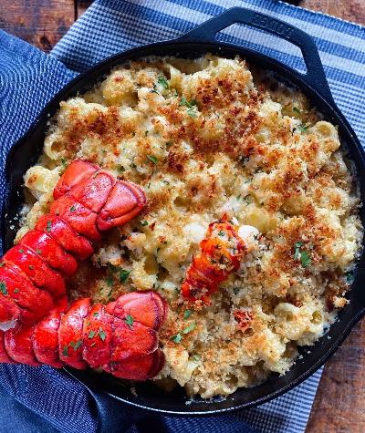

Home
Lobster Mac and Cheese

Description:
Ingredtions:
- Kosher Salt
- Vegetable Oil
- 1 lb Elbow Macaroni
- 1 qt Milk
- 8 tbsp (1 Stick) Unsalted Butter
- 1/2 Cup of All-Purpose Flower
- 12oz Gruyere Cheese, grated
- 8oz Extra Sharp Cheddar
- 1/2 tsp Fresh Ground Black Pepper
- 1/2 tsp Nutmeg
- 1 1/2 lbs Cooked Lobster Meat
- 1 1/12 Cups of Fresh White Bread Crumbs
Steps:
- Preheat the oven to 375 degrees F.
- Drizzle oil into a large pot of boiling salted water. Add the pasta and cook according to the directions on
the package, 6 to 8 minutes. Drain well.
- Meanwhile, heat the milk in a small saucepan, but don't boil it. In a large pot, melt 6 tablespoons of butter and
add the flour. Cook over low heat for 2 minutes, stirring with a whisk. Still whisking, add the hot milk and cook
for a minute or two more, until thickened and smooth. Off the heat, add the Gruyere, Cheddar, 1 tablespoon salt,
the pepper, and nutmeg. Add the cooked macaroni and lobster and stir well. Place the mixture in 6 to 8 individual
gratin dishes.
- Melt the remaining 2 tablespoons of butter, combine them with the fresh bread crumbs, and sprinkle on the top.
Bake for 30 to 35 minutes, or until the sauce is bubbly and the macaroni is browned on the top.